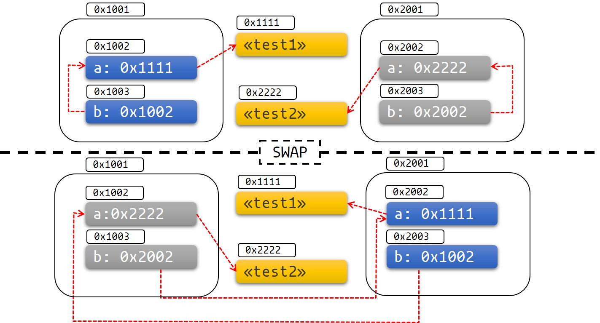
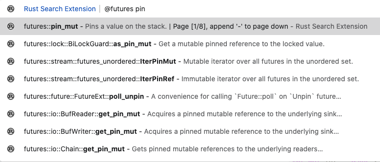

「转」Rust 的 Pin 和 Unpin
2019年2月28号，Rust 1.33版发布，增加了新的pinning API，主要包括这几个：
std::pin::Pinstd::marker::Unpinstd::marker::PhantomPinnedimpl !Unpin for T
刚开始接触这些概念的时候感觉特别绕，有点难理解透彻。网上也有不少讲Pin和Unpin的文章，但总感觉讲得不是特别清楚。直接去看 std::pin 模块的文档理解起来也挺有难度的。所以这篇文章我将尝试由浅入深的梳理一下Pin和Unpin，希望能帮助大家理解这些概念。
概念
我们先看一下Pin官方文档上的定义：
#![allow(unused)] fn main() { /// /// This is a wrapper around a kind of pointer which makes that pointer "pin" its /// value in place, preventing the value referenced by that pointer from being moved /// unless it implements [`Unpin`]. #[stable(feature = "pin", since = "1.33.0")] #[lang = "pin"] #[fundamental] #[repr(transparent)] #[derive(Copy, Clone)] pub struct Pin<P> { pointer: P, } #[stable(feature = "pin", since = "1.33.0")] impl<P: Deref> Deref for Pin<P> { type Target = P::Target; fn deref(&self) -> &P::Target { Pin::get_ref(Pin::as_ref(self)) } } #[stable(feature = "pin", since = "1.33.0")] impl<P: DerefMut<Target: Unpin>> DerefMut for Pin<P> { fn deref_mut(&mut self) -> &mut P::Target { Pin::get_mut(Pin::as_mut(self)) } } }
我先来从宏观层面解读一下。Pin是一个这样的智能指针，他内部包裹了另外一个指针 P，并且只要 P 指针指向的内容（我们称为 T ）没有实现Unpin，则可以保证 T 永远不会被移动 (move)。Pin这个单词也很形象的表示Pin就像钉子一样可以把T钉住。所以Pin一般来说用Pin<P<T>>这种方式表示 (P 是 Pointer 的缩写，T 是 Type 的缩写)。这个定义初看有点绕，我们来划几个重点：
Pin自身是一个智能指针。为什么呢？因为他 impl 了Deref和DerefMut。Pin包裹的内容只能是指针，不能是其他普通类型。比如Pin<u32>就没有意义。Pin具有“钉住” T 不能移动的功能，这个功能是否生效取决于 T 是否 implUnpin。简单的说，如果 T 实现了Unpin，Pin的“钉住”功能完全失效了，这时候的Pin<P<T>>就等价于P<T>。Unpin是一个auto trait，编译器默认会给所有类型实现Unpin。唯独有几个例外，他们实现的是!Unpin。这几个例外是PhantomPinned，编译器为async/await desugar之后生成的implFuture的结构体。- 所以
Pin<P<T>>默认情况下的“钉住”功能是不生效的，只针对上面说的这几个impl!Unpin的情况生效。
看了这几条可能还有点懵，没关系，我们开始逐条剖析。首先要搞清楚的是到底什么是move以及为什么有些情况我们要防止move发生？
到底什么是move？
根据官方定义：所有权转移的这个过程就是move。我们先看一个大家都非常熟悉的例子：
fn main() { let mut s1 = String::from("Hello"); let s2 = s1; // s1的所有权转移给了s2，这里发生了move // let s3 = s1; // s1的所有权以及转移走了，不能再move，否则会报错：error[E0382]: use of moved value: `s1` }
基本概念这里不多解释了，我们需要搞明白的是let s2 = s1;这一行到底发生了什么事情。

借用了 TRPL 书上的这张图。s1和s2两个变量都是在栈上分配内存，字符串 “Hello” 是在堆上分配内存，其中ptr字段就是指向该字符串的指针。move发生的时候编译器会在栈上开辟一块新内存s2，然后原封不动把s1栈上的内容拷贝到s2，随即立马让原s1的内存失效。
再看一个 move 的列子：
fn main() { let mut x = String::from("xxx"); let mut y = String::from("yyy"); std::mem::swap(&mut x, &mut y); assert_eq!("yyy", &x); assert_eq!("xxx", &y); }
我们通过std::mem::swap()方法交换了两个可变借用&mut的内容，这里也发生了move。
像这两种move在 Rust 里面很稀松平常，使用起来丝毫不会引发什么问题。那到底是什么情况需要防止move的发生呢？
还真有，那就是自引用结构体！
自引用结构体的 move
自引用结构体 (Self-Referential Structs) 是一个这个样的结构体，它内部某个成员是对另外一个成员的引用。比如这样：
struct Test<'a> { a: String, b: &'a String, } fn main() { let a = String::from("Hello"); let _test = Test { a, b: &a }; // let _test = Test { a, b: &a }; // | - ^^ value borrowed here after move // | | // | value moved here }
但事实上我们没办法通过Safe Rust构造一个像 Test 这样的自引用结构体，Rust 目前对自引用结构体支持还很不完善。只能变通一下使用指针：
#![allow(unused)] fn main() { #[derive(Debug)] struct Test { a: String, b: *const String, // 改成指针 } impl Test { fn new(txt: &str) -> Self { Test { a: String::from(txt), b: std::ptr::null(), } } fn init(&mut self) { let self_ref: *const String = &self.a; self.b = self_ref; } fn a(&self) -> &str { &self.a } fn b(&self) -> &String { unsafe {&*(self.b)} } } }
我们来试一下这个自引用结构体的 move：
fn main() { let mut test1 = Test::new("test1"); test1.init(); let mut test2 = Test::new("test2"); test2.init(); println!("a: {}, b: {}", test1.a(), test1.b()); // 使用swap()函数交换两者，这里发生了move std::mem::swap(&mut test1, &mut test2); test1.a = "I've totally changed now!".to_string(); println!("a: {}, b: {}", test2.a(), test2.b()); }
这是打印结果：
a: test1, b: test1
a: test1, b: I've totally changed now!
有没有发现，出问题了！问题出在哪？原因是 Test 结构体中的字段 b 是一个指向字段 a 的指针，它在栈上存的是字段 a 的地址。通过swap()函数交换两个 Test 结构体之后，字段 a, b 分别移动到对方的内存区域上，但是 a 和 b 本身的内容没有变。也就是指针 b 依然指向的是原来的地址，但是这个地址现在已经属于另外一个结构体了！这不仅不是自引用结构体了，更可怕的是这个指针可能导致更危险的问题，这是 Rust 决不允许出现的！👇下面这张图可以帮助理解：

更关键的是 Rust 的Generator和async/await这一套都是基于自引用结构体实现的。如果不能从根源上解决这个问题，Rust 号称的Memory Safe的根基就完全动摇了。
更多关于async/await的原理，强烈推荐阅读这两本书：
- https://rust-lang.github.io/async-book
- https://cfsamson.github.io/books-futures-explained
所以我们来找一下导致这个问题的根源，然后想办法从根源上解决它！
根源是什么？
我们发现上面的例子最关键的一行代码是std::mem::swap(&mut test1, &mut test2)，就是它导致了我们自引用结构体失效引发了内存安全问题。所以我们是不是只要避免这个swap()函数应用到我们自引用结构体上就行？可是怎么去避免呢？我们来看一下swap()方法的定义：
#![allow(unused)] fn main() { #[inline] #[stable(feature = "rust1", since = "1.0.0")] pub fn swap<T>(x: &mut T, y: &mut T) { // SAFETY: the raw pointers have been created from safe mutable references satisfying all the // constraints on `ptr::swap_nonoverlapping_one` unsafe { ptr::swap_nonoverlapping_one(x, y); } } }
它的参数要求是可变借用&mut，所以只要我们想办法让Safe Rust下不暴露可变借用即可！
还是以 Test 为例，它自身没办法限制自己不能可变借用，因为我们直接用&mut Test{...}就可以轻松拿到。那从标准库中去找找，Box<T>呢？先不考虑它性能问题，我们把结构体 T 包裹在Box中，看Box能不能保证不暴露&mut T出去。看一下 API 文档，很遗憾不能。Box::leak()返回值就是&mut T，更甚者Box impl 了DerefMut，就算不用leak()我们也可以通过* &mut Box<T>解引用轻松拿到&mut T！
不用找了，在Pin之前的标准库中确实没有这样的 API 能够防止在Safe Rust下不暴露&mut T。
所以，接下来是该Pin登场的时候了！
Pin 闪亮登场
我们找到了问题的根源在哪，Pin就是从根源上解决这个问题的。现在我们很清晰了，似乎是不是可以用一句话概括：Pin就是一个不会让你在Safe Rust暴露可变借用&mut的智能指针?
答案是：不全正确。这就是Pin概念起初让大家一脸懵逼的地方。下面让Pin自己来解答大家的疑惑，Pin说：“你们不是想让我保证被我包裹的指针P<T>永远钉住不让move吗？我可以答应，但我有一个原则。那就是我永远不能钉住持有通行证的朋友，这张通行证就是Unpin。如果没有这张通行证，请放心，我会把你钉得死死的！”
举个例子。比如我是Pin，你是P<T>，如果你 impl 了Unpin，我会提供两种办法让你在Safe Rust下拿到&mut T：
- 第一种，使用：
Pin::get_mut()
#![allow(unused)] fn main() { impl<'a, T: ?Sized> Pin<&'a mut T> { #[stable(feature = "pin", since = "1.33.0")] #[inline(always)] pub fn get_mut(self) -> &'a mut T where T: Unpin { self.pointer } } }
- 第二种，我 impl 了
DerefMut，你可以解引用拿到&mut T
#![allow(unused)] fn main() { #[stable(feature = "pin", since = "1.33.0")] impl<P: DerefMut<Target: Unpin>> DerefMut for Pin<P> { fn deref_mut(&mut self) -> &mut P::Target { Pin::get_mut(Pin::as_mut(self)) } } }
可rustc爸爸太宽容了，他默认给你们所有类型发了通行证（都实现了Unpin）！搞得我都几乎快要失业了！
#![allow(unused)] fn main() { #[lang = "unpin"] pub auto trait Unpin {} #[stable(feature = "pin", since = "1.33.0")] impl<'a, T: ?Sized + 'a> Unpin for &'a T {} #[stable(feature = "pin", since = "1.33.0")] impl<'a, T: ?Sized + 'a> Unpin for &'a mut T {} #[stable(feature = "pin_raw", since = "1.38.0")] impl<T: ?Sized> Unpin for *const T {} #[stable(feature = "pin_raw", since = "1.38.0")] impl<T: ?Sized> Unpin for *mut T {} }
唯一让我欣慰的是，他给我留了一个叫PhantomPinned的小伙伴。别看他名字很奇怪，他可是我很喜欢的得力助手！因为他实现的是!Unpin！
#![allow(unused)] fn main() { #[stable(feature = "pin", since = "1.33.0")] #[derive(Debug, Copy, Clone, Eq, PartialEq, Ord, PartialOrd, Hash)] pub struct PhantomPinned; #[stable(feature = "pin", since = "1.33.0")] impl !Unpin for PhantomPinned {} }
rustc爸爸还说，你们如果想“改邪归正”去掉Unpin也可以，有两种办法：
- 使用
PhantomPinned。有了它，rustc爸爸不会让你实现Unpin。
#![allow(unused)] fn main() { use std::marker::PhantomPinned; #[derive(Debug)] struct Test { a: String, b: *const String, _marker: PhantomPinned, } }
- 得自己手动impl
!Unpin。前提是你要使用nightly版本，并且需要引入#![feature(negative_impls)]：
#![allow(unused)] #![feature(negative_impls)] fn main() { #[derive(Debug)] struct Test { a: String, b: *const String, } impl !Unpin for Test {} }
满足以上任意两个条件之一的话，我就会保证你没办法在Safe Rust下拿到可变借用&mut T（不信你去翻翻我的 API），拿不到&mut T你就没办法作用到std::mem::swap()上，也就是说你被我钉住了！你以为rustc爸爸给我施了魔法么？你错了，我的工作原理就是这么简单！感谢 Rust 世界丰富而强大的类型系统，我的其他兄弟Sync，Send也是这样，我们都没有所谓的魔法！
当然我还是提供了一个unsafe的get_unchecked_mut()，不管你有没有实现Unpin，你都可以通过调用这个方法拿到&mut T，但是你需要遵守Pin的契约（参考下面），否则出了什么问题后果自负！
#![allow(unused)] fn main() { impl<'a, T: ?Sized> Pin<&'a mut T> { #[stable(feature = "pin", since = "1.33.0")] #[inline(always)] pub unsafe fn get_unchecked_mut(self) -> &'a mut T { self.pointer } } }
Pin的契约：
对于
Pin<P<T>>，
- 如果
P<T>符合Unpin，那P<T>从被Pin包裹到被销毁，都要一直保证P<T>不被钉住- 如果
P<T>符合!Unpin，那P<T>从被Pin包裹到被销毁，都要一直保证P<T>被钉住
通过以上Pin的自述，我们再用一句话来总结：如果你实现了Unpin，Pin可以让你在Safe Rust下拿到&mut T，否则会把你在Safe Rust下钉住(也就是拿不到&mut T)。
接下来我们使用Pin来修复一下上面自引用结构体的问题。
如何构造一个 Pin
首先我们要梳理清楚怎样把P<T>用Pin包裹起来，也就是怎样构造一个Pin。查看文档会发现主要有这几种方式：
Pin::new()
#![allow(unused)] fn main() { impl<P: Deref<Target: Unpin>> Pin<P> { #[stable(feature = "pin", since = "1.33.0")] #[inline(always)] pub fn new(pointer: P) -> Pin<P> { // Safety: the value pointed to is `Unpin`, and so has no requirements // around pinning. unsafe { Pin::new_unchecked(pointer) } } } }
如果你的 P 指向的 T 是Unpin的话，你可以安全的调用Pin::new()构造一个Pin。可以看到它底层实际上是调用unsafe的Pin::new_unchecked()，之所以Pin::new()是安全的，是因为Unpin的情况下Pin的”钉住“效果是不起作用的，跟正常的指针一样了。
Pin::new_unchecked()
#![allow(unused)] fn main() { impl<P: Deref> Pin<P> { #[stable(feature = "pin", since = "1.33.0")] #[inline(always)] pub unsafe fn new_unchecked(pointer: P) -> Pin<P> { Pin { pointer } } } }
这个方法很简单，但它是unsafe的。标为unsafe的原因是编译器没办法保证使用者后续操作一定遵守Pin的契约。只要有存在违反契约的可能性，就必须用unsafe标记，因为这是使用者的问题，编译器没办法保证。如果使用者通过Pin::new_unchecked()构造一个Pin<P<T>>之后Pin的生命周期结束了，但P<T>依然存在，则后续操作依然可能被move，造成内存不安全。
#![allow(unused)] fn main() { use std::mem; use std::pin::Pin; fn move_pinned_ref<T>(mut a: T, mut b: T) { unsafe { let p: Pin<&mut T> = Pin::new_unchecked(&mut a); // This should mean the pointee `a` can never move again. } mem::swap(&mut a, &mut b); // The address of `a` changed to `b`'s stack slot, so `a` got moved even // though we have previously pinned it! We have violated the pinning API contract. } }
其他
包括Box::pin()，Rc::pin()和Arc::pin()等，底层都是调用上面的Pin::new_unchecked()，不再阐述。
Pin 的应用
Pin可以分为栈上还是堆上，取决于你要Pin的那个指针 P 是在栈上还是堆上。比如Pin<&mut T>是栈上，Pin<Box<T>>是在堆上。
Pin 到栈上
use std::marker::PhantomPinned; #[derive(Debug)] struct Test { a: String, b: *const String, _marker: PhantomPinned, } impl Test { fn new(txt: &str) -> Self { Test { a: String::from(txt), b: std::ptr::null(), _marker: PhantomPinned, // This makes our type `!Unpin` } } fn init<'a>(self: Pin<&'a mut Self>) { let self_ptr: *const String = &self.a; let this = unsafe { self.get_unchecked_mut() }; this.b = self_ptr; } fn a<'a>(self: Pin<&'a Self>) -> &'a str { &self.get_ref().a } fn b<'a>(self: Pin<&'a Self>) -> &'a String { unsafe { &*(self.b) } } } pub fn main() { let mut test1 = unsafe { Pin::new_unchecked(&mut Test::new("test1")) }; Test::init(test1.as_mut()); let mut test2 = unsafe { Pin::new_unchecked(&mut Test::new("test2")) }; Test::init(test2.as_mut()); println!("a: {}, b: {}", Test::a(test1.as_ref()), Test::b(test1.as_ref())); std::mem::swap(test1.get_mut(), test2.get_mut()); println!("a: {}, b: {}", Test::a(test2.as_ref()), Test::b(test2.as_ref())); }
我们尝试把&mut Test钉在栈上，然后尝试去调用get_mut()作为参数传给std::mem::swap()，发现编译不通过。Rust 编译器从编译阶段就阻止我们去犯错了。
| std::mem::swap(test1.get_mut(), test2.get_mut());
| ^^^^^^^ within `Test`, the trait `Unpin` is not implemented for `PhantomPinned`
|
Pin 到堆上
use std::pin::Pin; use std::marker::PhantomPinned; #[derive(Debug)] struct Test { a: String, b: *const String, _marker: PhantomPinned, } impl Test { fn new(txt: &str) -> Pin<Box<Self>> { let t = Test { a: String::from(txt), b: std::ptr::null(), _marker: PhantomPinned, }; let mut boxed = Box::pin(t); let self_ptr: *const String = &boxed.as_ref().a; unsafe { boxed.as_mut().get_unchecked_mut().b = self_ptr }; boxed } fn a<'a>(self: Pin<&'a Self>) -> &'a str { &self.get_ref().a } fn b<'a>(self: Pin<&'a Self>) -> &'a String { unsafe { &*(self.b) } } } pub fn main() { let mut test1 = Test::new("test1"); let mut test2 = Test::new("test2"); println!("a: {}, b: {}",test1.as_ref().a(), test1.as_ref().b()); // std::mem::swap(test1.get_mut(), test2.get_mut()); // std::mem::swap(&mut *test1, &mut *test2); println!("a: {}, b: {}",test2.as_ref().a(), test2.as_ref().b()); }
这里使用Box::pin()把 Test 钉在了堆上。取消注释任意一行都会编译不通过，因为 Test 是!Unpin的。
Future
#![allow(unused)] fn main() { #[stable(feature = "futures_api", since = "1.36.0")] pub trait Future { type Output; fn poll(self: Pin<&mut Self>, cx: &mut Context<'_>) -> Poll<Self::Output>; } }
接下来讲一下Pin目前最重要的一个应用：Future。当初 2018 年官方异步组引入Pin API的初衷就是为了解决Future内部自引用的问题。因为async/await就是通过Generator实现的，Generator是通过匿名结构体实现的。如果async函数中存在跨await的引用，会导致底层Generator存在跨yield的引用，那根据Generator生成的匿名结构体就会是一个自引用结构体！然后这个自引用结构体会impl Future，异步的Runtime在调用Future::poll()函数查询状态的时候，需要一个可变借用(即&mut Self)。如果这个&mut Self不包裹在Pin里面的话，开发者自己impl Future就会利用std::mem::swap()之类的函数move掉&mut Self！所以这就是Future的poll()必须要使用Pin<&mut Self>的原因。
#![allow(unused)] fn main() { // 这个async块中存在跨await的借用！ let mut fut = async { let to_borrow = String::from("Hello"); let borrowed = &to_borrow; SomeResource::some_task().await; println!("{} world!", borrowed); }; }
当然还有非常重要的一点不能忘了！Pin只对实现!Unpin的类型才有钉住的效果，这个impl Future的匿名结构体有impl !Unpin吗？当然有，前面说了只有几种特例是默认!Unpin，这个匿名结构体就是其中之一。
#![allow(unused)] fn main() { pub const fn from_generator<T>(gen: T) -> impl Future<Output = T::Return> where T: Generator<ResumeTy, Yield = ()>, { #[rustc_diagnostic_item = "gen_future"] struct GenFuture<T: Generator<ResumeTy, Yield = ()>>(T); // We rely on the fact that async/await futures are immovable in order to create // self-referential borrows in the underlying generator. impl<T: Generator<ResumeTy, Yield = ()>> !Unpin for GenFuture<T> {} impl<T: Generator<ResumeTy, Yield = ()>> Future for GenFuture<T> { type Output = T::Return; fn poll(self: Pin<&mut Self>, cx: &mut Context<'_>) -> Poll<Self::Output> { // SAFETY: Safe because we're !Unpin + !Drop, and this is just a field projection. let gen = unsafe { Pin::map_unchecked_mut(self, |s| &mut s.0) }; // Resume the generator, turning the `&mut Context` into a `NonNull` raw pointer. The // `.await` lowering will safely cast that back to a `&mut Context`. match gen.resume(ResumeTy(NonNull::from(cx).cast::<Context<'static>>())) { GeneratorState::Yielded(()) => Poll::Pending, GeneratorState::Complete(x) => Poll::Ready(x), } } } GenFuture(gen) } }
划重点impl <T: Generator<ResumeTy, Yield = ()>> !Unpin for GenFuture<T> {}，只有亲眼所见才能让大家信服。
其他
Pin除了上面这些内容外还有其他几个概念，比如Pin projection，Structural pin和Non-structural pin，笔者自己用的也不多，详细可以看官方文档或查阅其他资料。
futures-rs 中还有不少和Pin有关的 API，如果深入使用futures-rs的话，不可避免的需要频繁的和Pin打交道。

总结
下面是摘抄自官方 Async Book 上关于Pin的黄金8条作为总结，这些几乎就是Pin API 的全部了。
- If T: Unpin (which is the default), then Pin<'a, T> is entirely equivalent to &'a mut T. in other words: Unpin means it's OK for this type to be moved even when pinned, so Pin will have no effect on such a type.
- Getting a &mut T to a pinned T requires unsafe if T: !Unpin.
- Most standard library types implement Unpin. The same goes for most "normal" types you encounter in Rust. A Future generated by async/await is an exception to this rule.
- You can add a !Unpin bound on a type on nightly with a feature flag, or by adding std::marker::PhantomPinned to your type on stable.
- You can either pin data to the stack or to the heap.
- Pinning a !Unpin object to the stack requires unsafe
- Pinning a !Unpin object to the heap does not require unsafe. There is a shortcut for doing this using Box::pin.
- For pinned data where T: !Unpin you have to maintain the invariant that its memory will not get invalidated or repurposed from the moment it gets pinned until when drop is called. This is an important part of the pin contract.
2018 年 Rust 异步组的核心成员 @withoutboats 在他个人博客分享了稳定async/await的整个心路历程，感觉这一路也是充满曲折。比如Pin刚开始还需要区分Pin，PinMut，PinBox等，现在精简到只需要一个Pin<P>就能搞定。还有更早的时候还计划引入一个叫Move的 trait 来标记该类型是否可以move等等。我这篇文章里面的代码基于 1.48 版，不确定Pin以后会不会有更新，而且Pin目前还存在一个unsoundness的问题。不管怎样，一切简单优雅的设计背后一定隐藏着复杂和艰辛，感谢 Rust 官方过去的努力，让我们能够有内存安全、无畏并发和符合人体工程的编程体验！